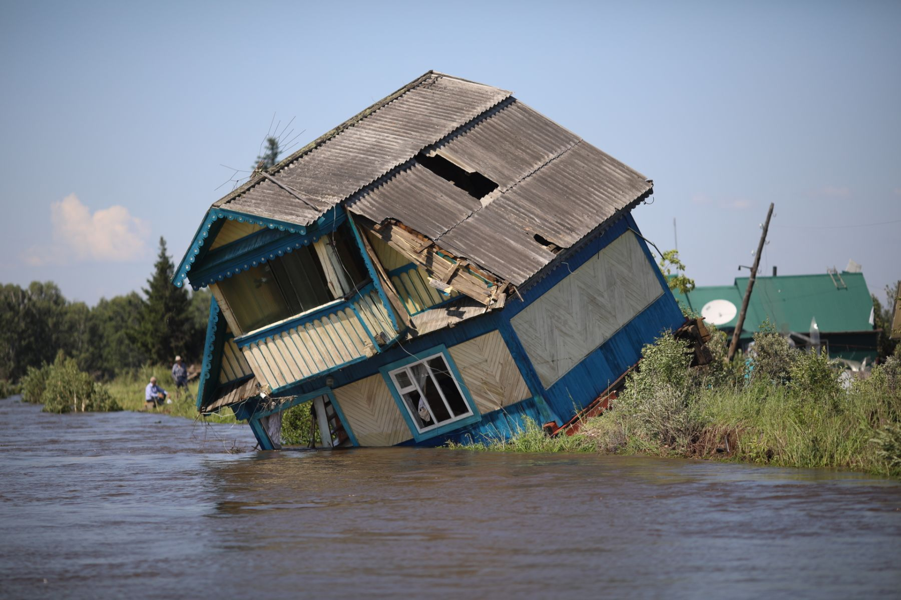

Одно из крупнейших за последние десятилетия наводнений произошло в Краснодарском крае летом 2012 года. Ливни начались 6 июля, и за несколько часов на Геленджик, Крымск и Новороссийск обрушилась пятимесячная норма осадков. При этом наиболее интенсивно ливень шел глубокой ночью. Менее чем за десять минут уровень воды поднялся на несколько метров, затопив первые этажи зданий. 29 тыс. человек полностью утратили имущество, 1,7 тыс. домов были полностью разрушены. Осень 2016-го в Приморском крае прошел тайфун «Лайонрок», который вызвал сильный паводок и затопил около 4 тыс. домов. Под водой оказались несколько деревень и поселков. Ликвидацией последствий занимались свыше 5 тыс. сотрудников МЧС, а также несколько сотен единиц техники, среди которых были 25 воздушных судов и пять беспилотников. Наводнения на Дальнем Востоке случались и прежде. Мощнейший паводок обрушился на регион летом 2013 года: он привел к самому масштабному наводнению за последний век. Общая площадь затопленных территорий превысила 8 млн кв. км. Ликвидацией последствий стихии занимались свыше 300 тыс. человек, в том числе военные. Общий объем ущерба оценивался в 527 млрд рублей, а пострадавшими были признаны около 190 тыс. человек. Российское лето 2017 года выдалось весьма капризным. Низкая температура воздуха, тропические ливни, шквалистый ветер и сильнейшие ураганы приводят к природным катаклизмам — в частности, к возникновению наводнений. В XXI веке регионы России пережили множество потопов, большинство которых закончились трагедиями. В мае 2017-го в Ставропольском крае произошло крупнейшее за последние полвека наводнение. Причиной стали сильные дожди и не расчищенные вовремя русла рек. Из-за угрозы переполнения Отказненского водохранилища было эвакуировано более 40 тыс. человек. По информации МЧС, пострадало порядка 5 тыс. жителей, из них около 1 тыс. детей. Сильнее всего пострадали жители Минеральных Вод, где уровень воды достиг отметки 5,5 м. Ущерб от паводка превысил 2,3 млрд рублей. Последствия наводнения до сих пор не устранены, а для укрепления берегов и расчистки русел потребуется не менее 10 млрд рублей и несколько лет работы. Сильнейшие ливни с градом и ураганным ветром, прошедшие в Карачаево-Черкесии в июле 2022 года, привели к резкому подъему воды в реке Аманауз. Из-за разгула стихии в курортном поселке Домбай была подтоплена гостиница «Адель»: в итоге 77 детей, находившихся на отдыхе, пришлось эвакуировать.